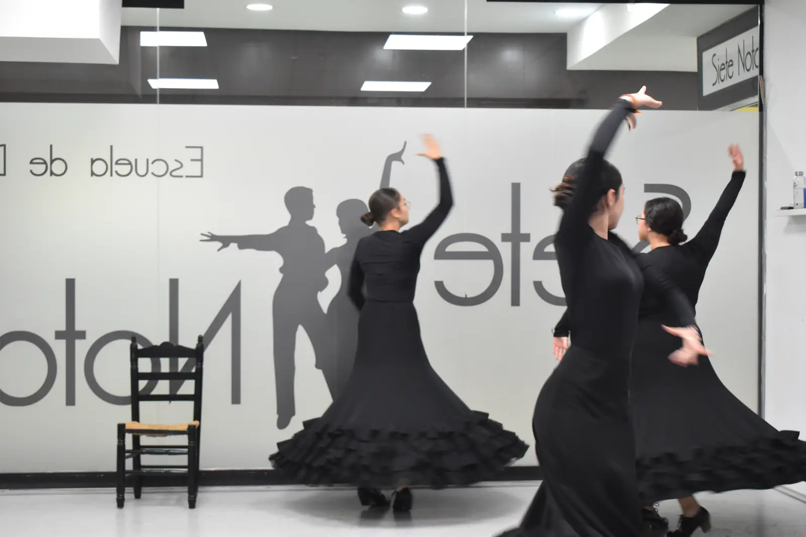

Flamenco y sevillanas en Leganés

Técnica, compás y expresión para distintos niveles.
En Siete Notas trabajamos con una metodología cercana, organizada por niveles y pensada para que cada alumno pueda avanzar con confianza. Si buscas una escuela en Leganés, puedes llamarnos o escribirnos para consultar horarios y disponibilidad.
Preguntas frecuentes
¿Puedo probar una clase? Puedes contactar para consultar disponibilidad y orientación.
¿Hay grupos por edad? Sí, según la actividad se organizan grupos por edad, nivel y objetivo.